File: 000360.gt.txt (if the image is defective, simply delete all Arabic text and the line will be excluded)
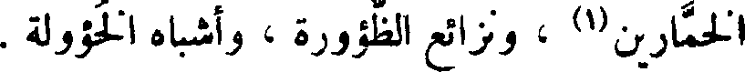
الخمارين(1) ، ونزائع الظؤورة ، وأشباه الخؤولة .
File: 000361.gt.txt (if the image is defective, simply delete all Arabic text and the line will be excluded)
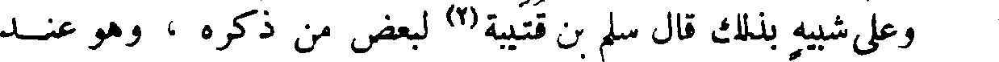
وعلى شبيه بذلك قال سلم بن قتيبة(2) لبعض من ذكره ، وهو عند
File: 000362.gt.txt (if the image is defective, simply delete all Arabic text and the line will be excluded)
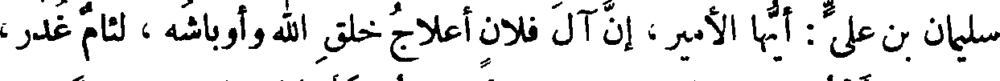
سليمان بن علي : أيها الأمير، إن آل فلان أعلاج خلق الله وأوباشه ، لئام غدر،
File: 000363.gt.txt (if the image is defective, simply delete all Arabic text and the line will be excluded)
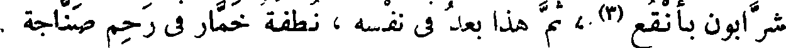
شرابون بأنقع(3) ، ثم هذا بعد في نفسه ، نطفة خمار في رحم صناجة .
File: 000364.gt.txt (if the image is defective, simply delete all Arabic text and the line will be excluded)
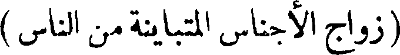
( زواج الأجناس المتباينة من الناس )
File: 000365.gt.txt (if the image is defective, simply delete all Arabic text and the line will be excluded)
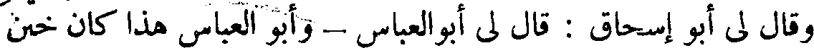
وقال لي أبو إسحاق : قال لي أبوالعباس - وأبو العباس هذا كان ختن
File: 000366.gt.txt (if the image is defective, simply delete all Arabic text and the line will be excluded)
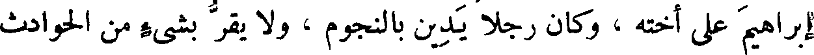
إبراهيم على أخته ، وكان رجلا يدين بالنجوم ، ولا يقر بشيء من الحوادث
File: 000367.gt.txt (if the image is defective, simply delete all Arabic text and the line will be excluded)
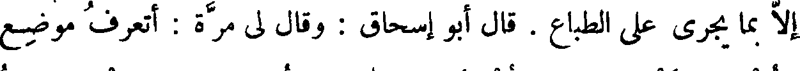
إلا بما يجري على الطباع . قال أبو إسحاق : وقال لي مرة : أتعرف موضع
File: 000368.gt.txt (if the image is defective, simply delete all Arabic text and the line will be excluded)
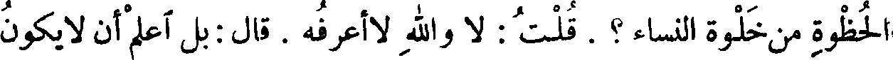
الحظوة من خلوة النساء؟ . قلت : لا والله لاأعرفه . قال : بل اعلم أن لا يكون
File: 000369.gt.txt (if the image is defective, simply delete all Arabic text and the line will be excluded)
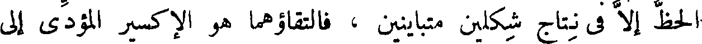
الحظ إلا في نتاج شكلين متباينين ، فالتقاؤهما هو الأكسير المؤدي إلى
File: 000370.gt.txt (if the image is defective, simply delete all Arabic text and the line will be excluded)
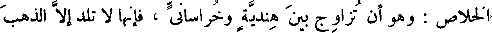
الخلاص : وهو أن تزاوج بين هندية وخراساني ، فإنها لا تلد إلا الذهب
File: 000371.gt.txt (if the image is defective, simply delete all Arabic text and the line will be excluded)
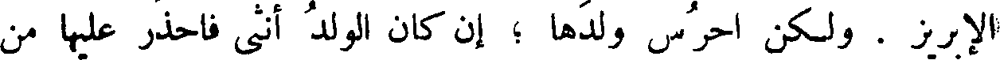
الإبريز . ولكن احرس ولدها ؛ إن كان الولد أنثى فاحذر عليها من
File: 000372.gt.txt (if the image is defective, simply delete all Arabic text and the line will be excluded)
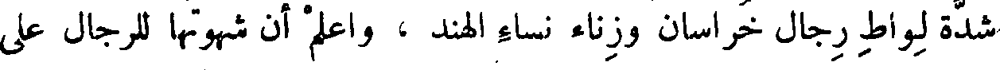
شدة لواط رجال خراسان وزناء نساء الهند ، واعلم أن شهوتها للرجال على
File: 000373.gt.txt (if the image is defective, simply delete all Arabic text and the line will be excluded)
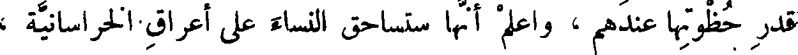
قدر حظوتها عندهم ، واعلم أنها ستساحق النساء على أعراق الخراسانية ،
File: 000374.gt.txt (if the image is defective, simply delete all Arabic text and the line will be excluded)
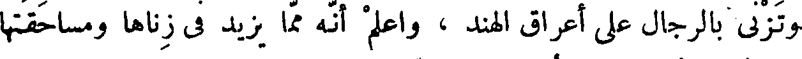
وتزني بالرجال على أعراق الهند ، واعلم أنه مما يزيد في زناها ومساحقتها
File: 000375.gt.txt (if the image is defective, simply delete all Arabic text and the line will be excluded)
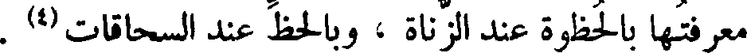
معرفتها بالحظوة عند الزناة ، وبالحظ عند السحاقات(4) .
File: 000376.gt.txt (if the image is defective, simply delete all Arabic text and the line will be excluded)
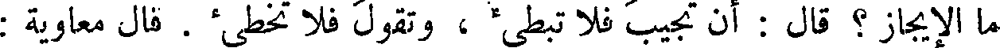
ما الإيجاز ؟ قال : أن تجيب فلا تبطئ ، وتقول فلا تخطئ . قال معاوية :
File: 000377.gt.txt (if the image is defective, simply delete all Arabic text and the line will be excluded)
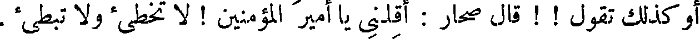
أو كذلك تقول ! ! قال صحار : أقلني يا أمير المؤمنين ! لا تخطئ ولا تبطئ .
File: 000378.gt.txt (if the image is defective, simply delete all Arabic text and the line will be excluded)
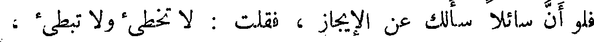
فلو أن سائلا سألك عن الإيجاز ، فقلت : لا تخطئ ولا تبطئ ،
File: 000379.gt.txt (if the image is defective, simply delete all Arabic text and the line will be excluded)
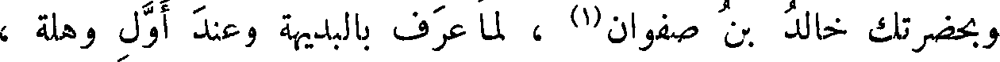
وبحضرتك خالد بن صفوان(1) ، لما عرف بالبديهة وعند أول وهلة ،
File: 000380.gt.txt (if the image is defective, simply delete all Arabic text and the line will be excluded)
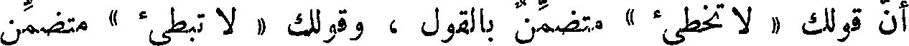
أن قولك « لا تخطئ » متضمن بالقول ، وقولك « لا تبطئ » متضمن
File: 000381.gt.txt (if the image is defective, simply delete all Arabic text and the line will be excluded)
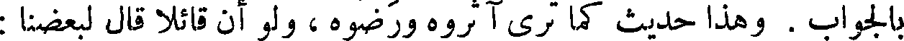
بالجواب . وهذا حديث كما ترى آثروه ورضوه ، ولو أن قائلا قال لبعضنا :
File: 000382.gt.txt (if the image is defective, simply delete all Arabic text and the line will be excluded)
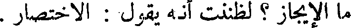
ما الإيجاز ؟ لظننت أنه يقول : الاختصار .
File: 000383.gt.txt (if the image is defective, simply delete all Arabic text and the line will be excluded)
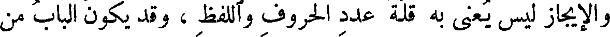
والإيجاز ليس يعنى به قلة عدد الحروف واللفظ ، وقد يكون الباب من
File: 000384.gt.txt (if the image is defective, simply delete all Arabic text and the line will be excluded)
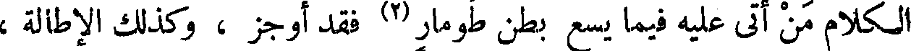
الكلام من أتى عليه فيما يسع بطن طومار(2) فقد أوجز ، وكذلك الإطالة ،
File: 000385.gt.txt (if the image is defective, simply delete all Arabic text and the line will be excluded)
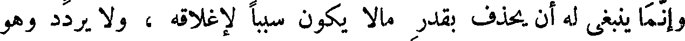
وإنما ينبغي له أن يحذف بقدر مالا يكون سببا لإغلاقه ، ولا يردد وهو
File: 000386.gt.txt (if the image is defective, simply delete all Arabic text and the line will be excluded)
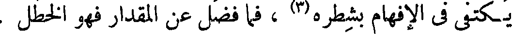
يكتفي في الإفهام بشطره(3) ، فما فضل عن المقدار فهو الخطل .
File: 000387.gt.txt (if the image is defective, simply delete all Arabic text and the line will be excluded)
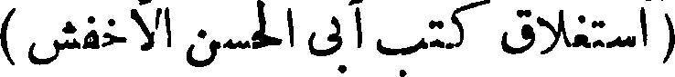
( استغلاق كتب آبي الحسن الأخفش )
File: 000388.gt.txt (if the image is defective, simply delete all Arabic text and the line will be excluded)
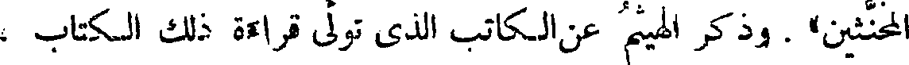
المخنثين» . وذكر الهيثم عن الكاتب الذي تولى قراءة ذلك الكتاب ،
File: 000389.gt.txt (if the image is defective, simply delete all Arabic text and the line will be excluded)
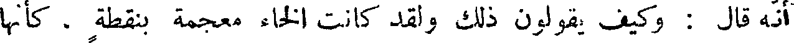
أنه قال : وكيف يقولون ذلك ولقد كانت الخاء معجمة بنقطة ، كأنها
To Save: `Ctrl+s`, make sure to choose `Webpage, complete`!